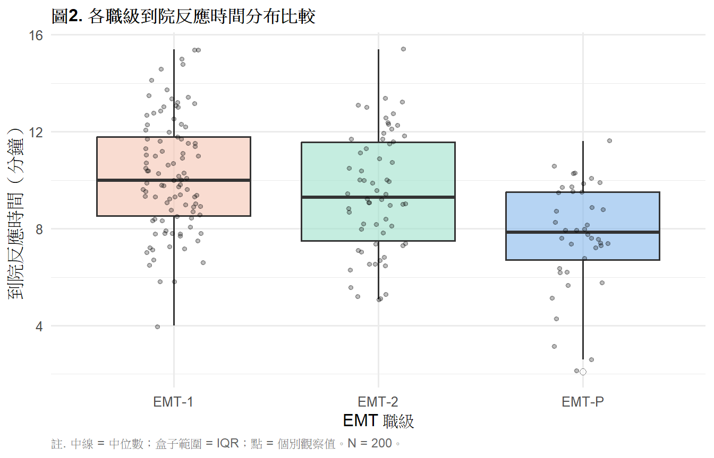
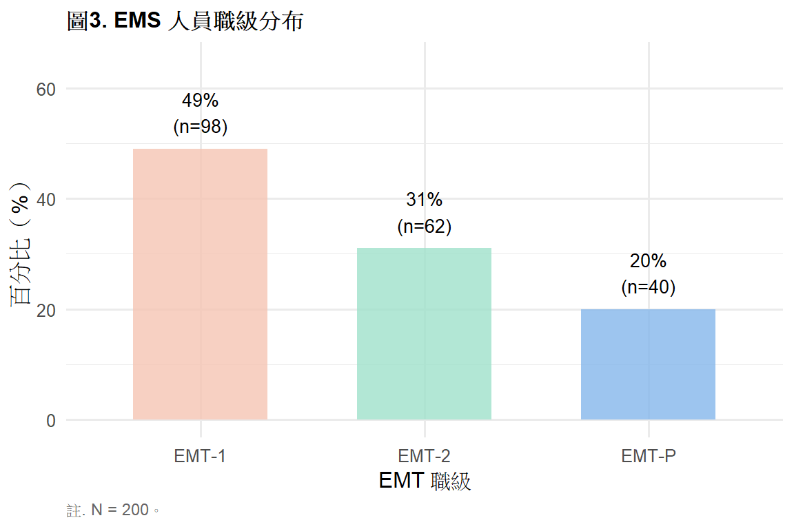

library(tidyverse)
library(gt)
library(psych)
ems <- read.csv("data/ems_main.csv",
fileEncoding = "UTF-8",
stringsAsFactors = FALSE)
ems$gender <- factor(ems$gender,
levels = c("男", "女"))
ems$level <- factor(ems$level,
levels = c("EMT-1", "EMT-2", "EMT-P"))
ems$district <- factor(ems$district,
levels = c("北部", "中部", "南部", "東部"))
ems$shift <- factor(ems$shift,
levels = c("日班為主", "夜班為主", "輪班"))第2週：描述性統計與流病測量指標
集中趨勢、離散程度、流行病學比率、R 實作
本週學習目標
- 理解描述統計的核心概念：集中趨勢與離散程度
- 正確選擇平均數或中位數
- 計算並詮釋流病測量指標
- 用 R 對
ems_main.csv執行完整描述統計
統計方法對照表（本週位置）
| X 自變項 | Y 依變項 | 本週方法 |
|---|---|---|
| 無（單變項） | 連續 | 平均數、標準差、中位數、IQR |
| 無（單變項） | 類別 | 次數、百分比、比率 |
註釋
描述統計沒有 X 與 Y 的區分——只是描述單一變項的分布。 從第 5 週開始才進入兩個變項的關係。
一、統計理論
1.1 為什麼需要描述統計？
你拿到 ems_main.csv，裡面有 200 筆資料、27 個欄位。你需要把這 200 個數字「壓縮」成幾個有意義的數字來理解它。
一個完整的描述需要回答兩個問題：
- 資料集中在哪裡？ → 集中趨勢（平均數、中位數）
- 資料散得多開？ → 離散程度（標準差、IQR）
1.2 集中趨勢
平均數（Mean）
\[\bar{x} = \frac{\sum_{i=1}^{n} x_i}{n}\]
把所有數值加總再除以個數。對極端值非常敏感。
中位數（Median）
把所有數值由小到大排列，取中間那個值。不受極端值影響。
重要
判斷原則：
- 直方圖近似鐘形 → 常態分布 → 用平均數 ± 標準差
- 直方圖偏態或有離群值 → 用中位數（IQR）
1.3 離散程度
標準差（SD）
\[s = \sqrt{\frac{\sum_{i=1}^{n}(x_i - \bar{x})^2}{n-1}}\]
分母用 n-1 是為了不偏估計（Bessel’s correction）。
四分位距（IQR）
\[IQR = Q_3 - Q_1\]
配合中位數使用，代表中間 50% 資料的範圍。
1.4 流行病學測量指標
盛行率（Prevalence）
\[P = \frac{\text{病例數}}{\text{觀察人口數}}\]
相對危險性（RR）
\[RR = \frac{\text{暴露組發生率}}{\text{非暴露組發生率}}\]
RR > 1 表示暴露增加風險；RR < 1 表示暴露具保護效果。
勝算比（OR）
\[OR = \frac{ad}{bc}\]
用在病例對照研究與羅吉斯回歸（第 10 週）。
提示
RR vs OR： 盛行率低（< 10%）時 OR ≈ RR。盛行率高時 OR 會高估相對風險。
二、分析流程
拿到一個變項
↓
連續 or 類別？
├── 類別 → 次數 + 百分比 + 長條圖
└── 連續 → 先看直方圖
├── 近似常態 → 平均數 ± SD
└── 偏態 → 中位數（IQR）三、R 實作
載入套件與資料
表1. 主要連續變項描述統計
desc_raw <- describe(
ems |> select(age, years, monthly_cases, bmi,
sbp, sleep_hrs, stress_vas,
mbi_ee, response_time)
)
data.frame(
變項 = c("年齡（歲）", "年資（年）",
"每月出勤（次）", "BMI（kg/m²）",
"收縮壓（mmHg）", "睡眠時數（h）",
"主觀壓力（VAS）", "情感耗竭（MBI）",
"反應時間（分）"),
n = as.integer(desc_raw$n),
Mean = round(desc_raw$mean, 2),
SD = round(desc_raw$sd, 2),
Median = round(desc_raw$median, 2),
Min = round(desc_raw$min, 2),
Max = round(desc_raw$max, 2),
Skewness = round(desc_raw$skew, 2)
) |>
gt() |>
tab_header(
title = "表1. 主要連續變項描述統計"
) |>
tab_spanner(
label = "集中趨勢",
columns = c(Mean, Median)
) |>
tab_spanner(
label = "離散程度",
columns = c(SD, Min, Max)
) |>
tab_source_note(
source_note = "註. N = 200。Skewness 絕對值 > 1 視為明顯偏態。"
) |>
cols_label(
變項 = "變項",
n = "n",
Mean = "Mean",
SD = "SD",
Median = "Median",
Min = "Min",
Max = "Max",
Skewness = "Skewness"
) |>
cols_align(align = "center", columns = -變項) |>
cols_align(align = "left", columns = 變項) |>
tab_style(
style = cell_text(weight = "bold"),
locations = cells_column_labels()
) |>
tab_style(
style = cell_text(weight = "bold"),
locations = cells_column_spanners()
) |>
tab_options(
table.border.top.style = "hidden",
heading.border.bottom.style = "solid",
column_labels.border.top.style = "solid",
column_labels.border.bottom.style = "solid",
table.border.bottom.style = "solid",
table.font.size = px(13),
heading.title.font.size = px(14),
heading.align = "left"
)| 表1. 主要連續變項描述統計 | |||||||
| 變項 | n |
集中趨勢
|
離散程度
|
Skewness | |||
|---|---|---|---|---|---|---|---|
| Mean | Median | SD | Min | Max | |||
| 年齡（歲） | 200 | 33.33 | 34.0 | 6.94 | 22.0 | 58.0 | 0.33 |
| 年資（年） | 200 | 7.21 | 7.0 | 4.62 | 1.0 | 22.0 | 0.81 |
| 每月出勤（次） | 200 | 48.12 | 48.0 | 10.79 | 24.0 | 76.0 | 0.01 |
| BMI（kg/m²） | 200 | 24.74 | 24.8 | 3.15 | 17.0 | 33.3 | 0.02 |
| 收縮壓（mmHg） | 200 | 117.54 | 117.0 | 13.01 | 90.0 | 148.0 | -0.02 |
| 睡眠時數（h） | 200 | 6.05 | 6.1 | 1.02 | 3.0 | 9.0 | -0.10 |
| 主觀壓力（VAS） | 200 | 5.34 | 5.3 | 1.83 | 0.0 | 10.0 | -0.09 |
| 情感耗竭（MBI） | 200 | 3.02 | 3.0 | 1.12 | 0.2 | 6.0 | -0.14 |
| 反應時間（分） | 200 | 9.48 | 9.4 | 2.52 | 2.1 | 15.4 | -0.04 |
| 註. N = 200。Skewness 絕對值 > 1 視為明顯偏態。 | |||||||
表2. 各職級到院反應時間描述統計
ems |>
group_by(level) |>
summarise(
n = n(),
Mean = round(mean(response_time), 2),
SD = round(sd(response_time), 2),
Median = round(median(response_time), 2),
Q1 = round(quantile(response_time, 0.25), 2),
Q3 = round(quantile(response_time, 0.75), 2),
.groups = "drop"
) |>
rename(職級 = level) |>
gt() |>
tab_header(
title = "表2. 各職級到院反應時間描述統計"
) |>
tab_spanner(
label = "集中趨勢",
columns = c(Mean, Median)
) |>
tab_spanner(
label = "四分位數",
columns = c(Q1, Q3)
) |>
tab_source_note(
source_note = "註. 單位：分鐘。Q1 = 第25百分位；Q3 = 第75百分位。"
) |>
cols_align(align = "center", columns = -職級) |>
cols_align(align = "left", columns = 職級) |>
tab_style(
style = cell_text(weight = "bold"),
locations = cells_column_labels()
) |>
tab_style(
style = cell_text(weight = "bold"),
locations = cells_column_spanners()
) |>
tab_options(
table.border.top.style = "hidden",
heading.border.bottom.style = "solid",
column_labels.border.top.style = "solid",
column_labels.border.bottom.style = "solid",
table.border.bottom.style = "solid",
table.font.size = px(13),
heading.title.font.size = px(14),
heading.align = "left"
)| 表2. 各職級到院反應時間描述統計 | ||||||
| 職級 | n |
集中趨勢
|
SD |
四分位數
|
||
|---|---|---|---|---|---|---|
| Mean | Median | Q1 | Q3 | |||
| EMT-1 | 98 | 10.21 | 10.00 | 2.35 | 8.53 | 11.78 |
| EMT-2 | 62 | 9.47 | 9.30 | 2.44 | 7.50 | 11.57 |
| EMT-P | 40 | 7.72 | 7.85 | 2.19 | 6.70 | 9.50 |
| 註. 單位：分鐘。Q1 = 第25百分位；Q3 = 第75百分位。 | ||||||
表3. EMS 人員職級分布
ems |>
count(level) |>
mutate(
百分比 = round(n / sum(n) * 100, 1),
累積百分比 = round(cumsum(百分比), 1)
) |>
rename(職級 = level, 人數 = n) |>
gt() |>
tab_header(
title = "表3. EMS 人員職級分布"
) |>
tab_source_note(
source_note = "註. N = 200。"
) |>
cols_align(align = "center", columns = -職級) |>
cols_align(align = "left", columns = 職級) |>
tab_style(
style = cell_text(weight = "bold"),
locations = cells_column_labels()
) |>
tab_options(
table.border.top.style = "hidden",
heading.border.bottom.style = "solid",
column_labels.border.top.style = "solid",
column_labels.border.bottom.style = "solid",
table.border.bottom.style = "solid",
table.font.size = px(13),
heading.title.font.size = px(14),
heading.align = "left"
)| 表3. EMS 人員職級分布 | |||
| 職級 | 人數 | 百分比 | 累積百分比 |
|---|---|---|---|
| EMT-1 | 98 | 49 | 49 |
| EMT-2 | 62 | 31 | 80 |
| EMT-P | 40 | 20 | 100 |
| 註. N = 200。 | |||
圖1. 到院反應時間分布
ggplot(ems, aes(x = response_time)) +
geom_histogram(bins = 20,
fill = "#85B7EB",
color = "white") +
geom_vline(xintercept = mean(ems$response_time),
color = "#D85A30",
linetype = "dashed",
linewidth = 0.9) +
geom_vline(xintercept = median(ems$response_time),
color = "#1D9E75",
linetype = "dashed",
linewidth = 0.9) +
annotate("text",
x = mean(ems$response_time) + 1.5,
y = 26,
label = paste0("平均數 = ",
round(mean(ems$response_time), 1)),
color = "#D85A30", size = 3.5) +
annotate("text",
x = median(ems$response_time) - 1.5,
y = 23,
label = paste0("中位數 = ",
round(median(ems$response_time), 1)),
color = "#1D9E75", size = 3.5) +
labs(
title = "圖1. EMS 人員到院反應時間分布",
x = "到院反應時間（分鐘）",
y = "人數（n）",
caption = "註. 橘色虛線 = 平均數；綠色虛線 = 中位數。N = 200。"
) +
theme_minimal(base_size = 12) +
theme(
plot.title = element_text(face = "bold", size = 12),
plot.caption = element_text(hjust = 0, size = 9,
color = "gray40")
)
圖2. 各職級反應時間盒鬚圖
ggplot(ems, aes(x = level, y = response_time,
fill = level)) +
geom_boxplot(alpha = 0.6,
outlier.shape = 21,
outlier.fill = "white",
outlier.size = 2) +
geom_jitter(width = 0.15, alpha = 0.25, size = 1.2) +
scale_fill_manual(
values = c("EMT-1" = "#F5C4B3",
"EMT-2" = "#9FE1CB",
"EMT-P" = "#85B7EB")
) +
labs(
title = "圖2. 各職級到院反應時間分布比較",
x = "EMT 職級",
y = "到院反應時間（分鐘）",
caption = "註. 中線 = 中位數；盒子範圍 = IQR；點 = 個別觀察值。N = 200。"
) +
theme_minimal(base_size = 12) +
theme(
plot.title = element_text(face = "bold", size = 12),
legend.position = "none",
plot.caption = element_text(hjust = 0, size = 9,
color = "gray40")
)
圖3. 職級人數分布長條圖
ems |>
count(level) |>
mutate(pct = round(n / sum(n) * 100, 1)) |>
ggplot(aes(x = level, y = pct, fill = level)) +
geom_col(alpha = 0.8, width = 0.6) +
geom_text(
aes(label = paste0(pct, "%\n(n=", n, ")")),
vjust = -0.4, size = 3.5
) +
scale_fill_manual(
values = c("EMT-1" = "#F5C4B3",
"EMT-2" = "#9FE1CB",
"EMT-P" = "#85B7EB")
) +
scale_y_continuous(limits = c(0, 65)) +
labs(
title = "圖3. EMS 人員職級分布",
x = "EMT 職級",
y = "百分比（%）",
caption = "註. N = 200。"
) +
theme_minimal(base_size = 12) +
theme(
plot.title = element_text(face = "bold", size = 12),
legend.position = "none",
plot.caption = element_text(hjust = 0, size = 9,
color = "gray40")
)
表4. 職業傷害流病測量指標
n_injury <- sum(ems$occ_injury == 1, na.rm = TRUE)
n_total <- nrow(ems)
prevalence <- n_injury / n_total
ems_rr <- ems |>
mutate(night = ifelse(shift == "夜班為主",
"夜班", "非夜班"))
tbl_2x2 <- table(ems_rr$night, ems_rr$occ_injury)
rate_night <- tbl_2x2["夜班", "1"] /
rowSums(tbl_2x2)["夜班"]
rate_non <- tbl_2x2["非夜班", "1"] /
rowSums(tbl_2x2)["非夜班"]
RR <- rate_night / rate_non
data.frame(
指標 = c("職業傷害盛行率",
"夜班職業傷害率",
"非夜班職業傷害率",
"相對危險性（RR）"),
數值 = c(
paste0(round(prevalence * 100, 1),
"% (", n_injury, "/", n_total, ")"),
paste0(round(rate_night * 100, 1), "%"),
paste0(round(rate_non * 100, 1), "%"),
as.character(round(RR, 2))
),
說明 = c(
"過去一年曾有職業傷害",
"夜班為主人員",
"日班或輪班人員",
"夜班相對非夜班的風險倍數"
)
) |>
gt() |>
tab_header(
title = "表4. EMS 人員職業傷害流病測量指標"
) |>
tab_source_note(
source_note = "註. RR = 相對危險性。RR > 1 表示夜班人員職業傷害風險較高。"
) |>
cols_align(align = "left", columns = everything()) |>
tab_style(
style = cell_text(weight = "bold"),
locations = cells_column_labels()
) |>
tab_options(
table.border.top.style = "hidden",
heading.border.bottom.style = "solid",
column_labels.border.top.style = "solid",
column_labels.border.bottom.style = "solid",
table.border.bottom.style = "solid",
table.font.size = px(13),
heading.title.font.size = px(14),
heading.align = "left"
)| 表4. EMS 人員職業傷害流病測量指標 | ||
| 指標 | 數值 | 說明 |
|---|---|---|
| 職業傷害盛行率 | 20.5% (41/200) | 過去一年曾有職業傷害 |
| 夜班職業傷害率 | 25% | 夜班為主人員 |
| 非夜班職業傷害率 | 18.9% | 日班或輪班人員 |
| 相對危險性（RR） | 1.32 | 夜班相對非夜班的風險倍數 |
| 註. RR = 相對危險性。RR > 1 表示夜班人員職業傷害風險較高。 | ||
四、結果報告範例（APA 格式）
連續變項（常態）：
EMS 人員平均年齡為 34.2 歲（SD = 6.8）；到院反應時間平均為 9.3 分鐘（SD = 2.5）。
連續變項（偏態）：
每月出勤次數中位數為 48 次（IQR：41–55），分布呈輕微右偏。
類別變項：
職級分布：EMT-1 佔 49.0%（n = 98），EMT-2 佔 31.0%（n = 62），EMT-P 佔 20.0%（n = 40）。
流病指標：
過去一年職業傷害盛行率為 22.0%（44/200）。夜班人員職業傷害率為非夜班人員的 1.8 倍（RR = 1.80），顯示夜班工作可能增加職業傷害風險。
本週小作業
Q1 計算 stress_vas 的平均數、中位數、標準差與 IQR，製作 gt APA 格式表格，並說明應用哪個集中趨勢指標較適合，附直方圖支持你的判斷。
Q2 用 group_by() + summarise() 計算各地區（district）response_time 的描述統計，製作 gt APA 格式表格並附盒鬚圖。
Q3 計算各職級人數與百分比，製作 gt APA 格式次數分布表與長條圖。
Q4 計算 occ_injury 盛行率，並比較「輪班」vs「日班為主」的職業傷害率，計算 RR 並用 APA 格式報告結果。
Q5 思考題： mbi_ee 的平均數與中位數差距大嗎？這告訴你什麼關於此變項的分布特性？